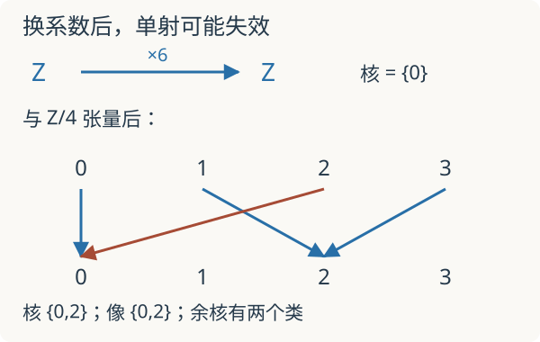

本页目录
基础衔接 05 · 张量积、平坦性与 Tor：一次换系数会丢掉什么
先修：模与正合性、链复形。目标：从双线性定义推出一个张量积，并用自由分解找回普通换系数遗漏的信息。所有环均交换且有单位，模均为单位模。
1. 明明是单射，换系数后却变成零映射
整数上的乘二映射是单射：\(2a=0\) 强迫 \(a=0\)。但把计算改到 \(\mathbb Z/2\)，乘二就是零。不能因此说整数证明有错；改变的是运算所在的模。要准确追踪这种变化，我们需要一种把系数作用移到新对象上的运算。
对 \(R\)-模 \(M,N\)，张量积 \(M\otimes_RN\) 由符号 \(m\otimes n\) 的有限和生成，并施加双线性关系：
形式上，可先取所有有序对上的自由 \(R\)-模，再对这些关系生成的子模取商。这样并非只造出了一个符号系统：任一双线性映射 \(b:M\times N\to P\) 都唯一诱导线性映射 \(\widetilde b:M\otimes_RN\to P\)，满足 \(\widetilde b(m\otimes n)=b(m,n)\)。关系恰好保证这个赋值良定义。
张量积不是笛卡尔积。若 \(V=R^r,W=R^s\) 都自由，则 \(e_i\otimes f_j\) 构成 \(rs\) 个基向量；一般元素是它们的线性组合，并非都能写成单个纯张量。
2. 不靠猜：算出两个循环模的张量积
取正整数 \(m,n\)，设 \(d=\gcd(m,n)\)。每个纯张量都能写成
令 \(t=\bar1\otimes\bar1\)，则 \(mt=nt=0\)。由 Bézout 等式 \(d=um+vn\)，有 \(dt=0\)，所以整个张量积是一个至多有 \(d\) 个元素的循环群。
“至多”还不是等号。构造双线性映射
改变 \(a\) 的代表元会增加 \(mb\)，它被 \(d\) 整除；改变 \(b\) 同理，所以映射良定义。它把 \(t\) 送到 \(\bar1\)，因此 \(t\) 的阶至少为 \(d\)。两边合起来证明
例如 \(m=6,n=4\) 得到 \(\mathbb Z/2\)，而互素的 \(m=3,n=4\) 得到零模。零模只有一个元素，并非空集。
3. 右正合保留了什么，又漏掉什么
从短正合列
出发，与 \(N=\mathbb Z/n\) 张量。利用 \(\mathbb Z\otimes N\cong N\)，得到
这里乘法映射的像正是商映射的核，商映射也仍满射。一般定理称张量积是右正合的；其原因是张量积保留商：对关系取商之后，双线性映射的泛性质与先张量再除以关系的像一致。
但左端不能随意补上 \(0\to\)。默认 \(m=6,n=4\) 时，\(\bar0\) 和 \(\bar2\) 都被乘六送到零。原来无核的映射出现了核。

4. 先保留分解，再换系数，得到 Tor
把上面的两个自由模放在同调次数 \(1,0\)，连同到 \(\mathbb Z/m\) 的增广映射，构成自由分解。计算 Tor 时，与 \(N\) 张量的是自由项；增广目标不是再多放入复形的一项。得到
零次同调是余核 \(N/mN\)，一次同调是核 \(N[m]=\{a\in N:ma=0\}\)。写 \(m=dm',n=dn'\)，其中 \(m',n'\) 互素，则
核由 \(\overline{n'}\) 生成，有 \(d\) 个元素。因此
高次消失来自这里长度为一的自由分解。对任意环上的任意模不能照抄。零次与一次同调在本例恰好同构，但含义不同：一个记录商，一个记录换系数后新增的核。
先预测：把 \(m=6,n=4\) 改成 \(m=5,n=4\)，核和余核怎样变化？实验逐个列出模 \(n\) 的乘法像；默认核为 \(\{0,2\}\)，像为 \(\{0,2\}\)，余核有两类，Tor₁ 也有两个元素。
5. 平坦不是“挑一个例子没有出错”
模 \(N\) 称为平坦，当与它张量保持所有短正合列正合。自由模是平坦的，因为与自由模张量相当于取若干份直和。局部化 \(S^{-1}R\) 也是平坦的；这把本讲接回允许新分母的操作。
\(\mathbb Z/n\) 在 \(n>1\) 时不平坦：用整数乘 \(n\) 的单射就能构造失败。即便实验中选择互素的 \(m,n\) 得到 Tor₁ 为零，也只验证了一个输入，不能推出 \(\mathbb Z/n\) 平坦。反过来，平坦并不要求有有限个基；例如 \(\mathbb Q\) 是 \(\mathbb Z\) 的局部化，平坦，却不是非零自由 \(\mathbb Z\)-模。
在导出几何里，换底不能只看普通张量积；先选合适分解再张量，会保留 Tor 所记录的高次信息。这是几何 Langlands 页的导出交点算例的入口，不等于已经构造了整个导出范畴。
6. 迁移题：从答案检验定义
题一。 求 \((\mathbb Z/8)\otimes\mathbb Z/12\) 与 Tor₁，并在 \(\mathbb Z/12\) 中写出核。
查看推导
\(d=4\)，两者都同构于 \(\mathbb Z/4\)。乘八的核是 \(\{0,3,6,9\}\)，像是 \(\{0,4,8\}\)，余核有 \(12/3=4\) 类。核有四个元素，不是只有四本身这一个元素。
题二。 实验取 \(m=5,n=4\) 时 Tor₁ 为零，能推出 \(\mathbb Z/4\) 平坦吗？给出一个反证输入。
查看反例
不能。改用 \(m=4\)，原整数乘四单射在张量后变成 \(\mathbb Z/4\) 上的零映射，有整个 \(\mathbb Z/4\) 为核。平坦性的量词是所有短正合列。
速查与资料
双线性映射经张量积唯一分解；右正合保留余核；平坦要求也保留单射；Tor 由自由或投射分解张量后的同调计算。下一讲：射影直线上的 Čech 上同调。定义与一般定理参见 Stacks：张量积、平坦模、计算 Tor。本讲的循环模计算已在正文证明。核查：2026-09-08。